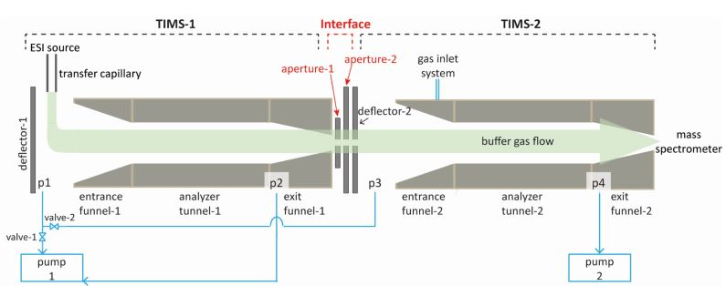

 My primary area of research involves studying and characterizing the ion dynamics that occur in the novel Tandem-Trapped Ion Mobility Spectrometry (Tandem-TIMS) instrument used in the Bleiholder lab. Tandem-TIMS offers a wide array of uses, including structural characterization of biological macromolecules. These studies use a relationship between the mobility of an ion that can be directly related to its structure.
Measuring an accurate cross section using TIMS is therefore very important. Other ion trapping techniques are perforemed in adiabatic enviornments, but TIMS uses radiofrequency (RF) fields at pressures above 1 mbar. The motion of ions in a non-uniform electric field and dynamic gas is not well studied, so it is very important that these ion dynamics are studied and characterized to develop a more accurate method.
| Name | phone number | |
| Hannah O'Day | hso19@my.fsu.edu | (850)585-4034 |